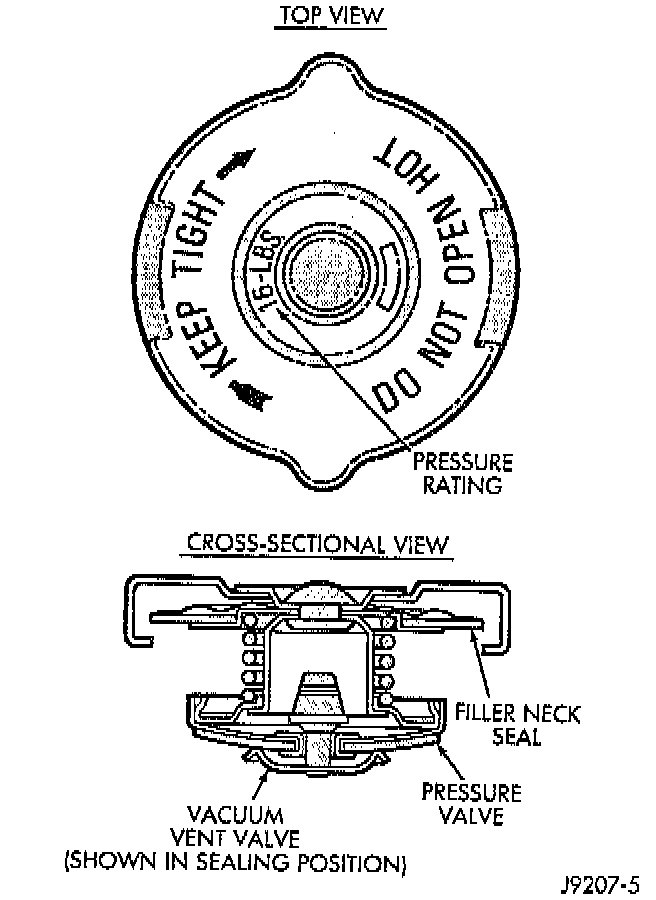

Radiator Cap: Description and Operation

DESCRIPTION
All radiators are equipped with a pressure cap. This cap releases pressure at some point within a range of 97 - 124 kPa (14 - 18 psi). The pressure relief point (in pounds) is engraved on top of the cap.
OPERATION
The cooling system will operate at pressures slightly above atmospheric pressure. This results in a higher coolant boiling point allowing increased radiator cooling capacity. The cap contains a spring-loaded pressure relief valve. This valve opens when system pressure reaches the release range of 97 - 124 kPa (14 - 18 psi).
VENT VALVE
A vent valve in the center of the cap allows a small coolant flow through the cap when coolant is below boiling temperature. The valve is completely closed when boiling point is reached. As the coolant cools, it contracts and creates a vacuum in cooling system. This causes the vacuum valve to open and coolant in reserve/overflow tank to be drawn through connecting hose into radiator. If the vacuum valve is stuck shut, radiator hoses will collapse on cool-down.
SEAL
A rubber gasket seals the radiator filler neck. This is done to maintain vacuum during coolant cool-down and to prevent leakage when system is under pressure.